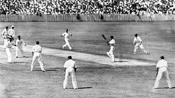
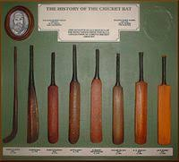
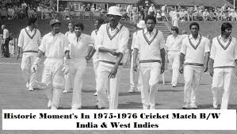
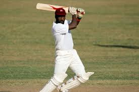
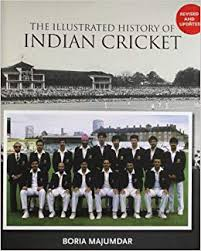
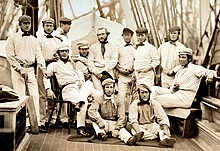
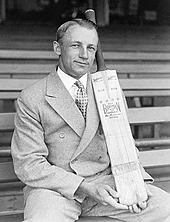

 It is generally believed that cricket originated as a children's game in the south-eastern counties of England, sometime during the medieval period.[3] Although there are claims for prior dates, the earliest definite reference to cricket being played comes from evidence given at a court case in Guildford on Monday, 17 January 1597 (Julian calendar; equating to 30 January 1598 in the Gregorian calendar). The case concerned ownership of a certain plot of land and the court heard the testimony of a 59-year-old coroner, John Derrick, who gave witness that:
"Being a scholler in the ffree schoole of Guldeford hee and diverse of his fellows did runne and play there at creckett and other plaies".
Given Derrick's age, it was about half a century earlier when he was at school and so it is certain that cricket was being played c. 1550 by boys in Surrey. The view that it was originally a children's game is reinforced by Randle Cotgrave's 1611 English-French dictionary in which he defined the noun "crosse" as "the crooked staff wherewith boys play at cricket" and the verb form "crosser" as "to play at cricket".
 One possible source for the sport's name is the Old English word "cryce" (or "cricc") meaning a crutch or staff. In Samuel Johnson's Dictionary, he derived cricket from "cryce, Saxon, a stick". In Old French, the word "criquet" seems to have meant a kind of club or stick.[10] Given the strong medieval trade connections between south-east England and the County of Flanders when the latter belonged to the Duchy of Burgundy, the name may have been derived from the Middle Dutch (in use in Flanders at the time) "krick"(-e), meaning a stick (crook). Another possible source is the Middle Dutch word "krickstoel", meaning a long low stool used for kneeling in church and which resembled the long low wicket with two stumps used in early cricket.[11] According to Heiner Gillmeister, a European language expert of Bonn University, "cricket" derives from the Middle Dutch phrase for hockey, met de (krik ket)sen (i.e., "with the stick chase"). Gillmeister has suggested that not only the name but also the sport itself may be of Flemish origin.
 The game underwent major development in the 18th century to become England's national sport.Its success was underwritten by the twin necessities of patronage and betting. Cricket was prominent in London as early as 1707 and, in the middle years of the century, large crowds flocked to matches on the Artillery Ground in Finsbury.[citation needed] The single wicket form of the sport attracted huge crowds and wagers to match, its popularity peaking in the 1748 season. Bowling underwent an evolution around 1760 when bowlers began to pitch the ball instead of rolling or skimming it towards the batsman. This caused a revolution in bat design because, to deal with the bouncing ball, it was necessary to introduce the modern straight bat in place of the old "hockey stick" shape.
The Hambledon Club was founded in the 1760s and, for the next twenty years until the formation of Marylebone Cricket Club (MCC) and the opening of Lord's Old Ground in 1787, Hambledon was both the game's greatest club and its focal point.[citation needed] MCC quickly became the sport's premier club and the custodian of the Laws of Cricket. New Laws introduced in the latter part of the 18th century included the three stump wicket and leg before wicket (lbw).
The 19th century saw underarm bowling superseded by first roundarm and then overarm bowling. Both developments were controversial. Organisation of the game at county level led to the creation of the county clubs, starting with Sussex in 1839. In December 1889, the eight leading county clubs formed the official County Championship, which began in 1890.

The most famous player of the 19th century was W. G. Grace, who started his long and influential career in 1865. It was especially during the career of Grace that the distinction between amateurs and professionals became blurred by the existence of players like him who were nominally amateur but, in terms of their financial gain, de facto professional. Grace himself was said to have been paid more money for playing cricket than any professional.
The last two decades before the First World War have been called the "Golden Age of cricket". It is a nostalgic name prompted by the collective sense of loss resulting from the war, but the period did produce some great players and memorable matches, especially as organised competition at county and Test level developed.
 Meanwhile, the British Empire had been instrumental in spreading the game overseas and by the middle of the 19th century it had become well established in Australia, the Caribbean, India, New Zealand, North America and South Africa. In 1844, the first-ever international match took place between the United States and Canada. In 1859, a team of English players went to North America on the first overseas tour.
In 1862, an English team made the first tour of Australia. The first Australian team to travel overseas consisted of Aboriginal stockmen who toured England in 1868.
 In 1876–77, an England team took part in what was retrospectively recognised as the first-ever Test match at the Melbourne Cricket Ground against Australia. The rivalry between England and Australia gave birth to The Ashes in 1882, and this has remained Test cricket's most famous contest.[48] Test cricket began to expand in 1888–89 when South Africa played England
The inter-war years were dominated by Australia's Don Bradman, statistically the greatest Test batsman of all time. Test cricket continued to expand during the 20th century with the addition of the West Indies (1928), New Zealand (1930) and India (1932) before the Second World War and then Pakistan (1952), Sri Lanka (1982), Zimbabwe (1992) and Bangladesh (2000) in the post-war period. South Africa was banned from international cricket from 1970 to 1992 as part of the apartheid boycott.
 Cricket entered a new era in 1963 when English counties introduced the limited overs variant. As it was sure to produce a result, limited overs cricket was lucrative and the number of matches increased. The first Limited Overs International was played in 1971 and the governing International Cricket Council (ICC), seeing its potential, staged the first limited overs Cricket World Cup in 1975. In the 21st century, a new limited overs form, Twenty20, made an immediate impact.[citation needed] On 22 June 2017, Afghanistan and Ireland became the 11th and 12th ICC full members, enabling them to play Test cricket.